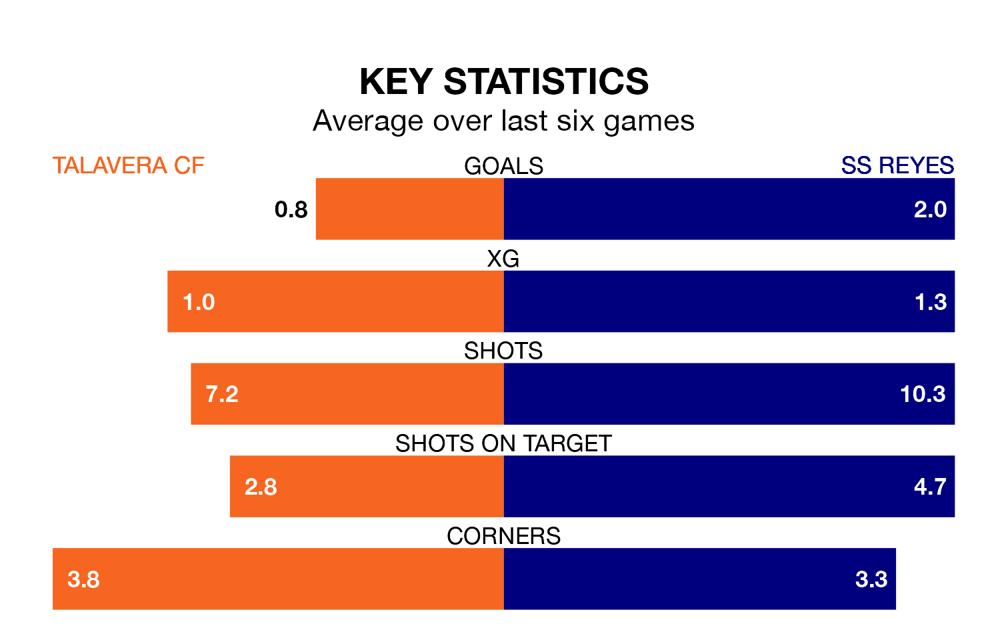

Talavera CF host SS Reyes in Sunday's match at the Estadio El Prado looking to bounce back from defeat last time out in Segunda División RFEF Group 5.
Talavera, who sit fourth in the league after 20 games, fell to a 1-0 away defeat to CD Mensajero on January 28.
They face a SS Reyes side who picked up a win in their last match, a 3-1 victory against Ursaria, and who sit first in the table.
With 29 goals in 20 games so far this season, SS Reyes are the league's joint-second-highest scorers with 1.4 goals per game. And they are conceding fewer than average, letting in 13 goals at a rate of 0.7 per game.
Talavera, meanwhile, are average scorers, with 1.1 goals per game. They have conceded 0.6 goals per game.
In the last 10 years, Talavera and SS Reyes have played each other on seven occasions. Talavera won three of them, SS Reyes two, and they drew twice.
On average, Talavera scored 0.9 goals and SS Reyes 0.4 in those matches.
Their last meeting was on September 24, when they played out a 0-0 draw.
The hosts are in mixed form in Segunda División RFEF Group 5, with two wins and two draws from their last six games.
With four wins and two draws over that period, the away team's form is much better – they have taken 14 points from 18, compared to Talavera's eight.
Updated: 10:40 (UTC), 01/02/24